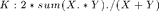

Contents
From Voxels to Knowledge: A Practical Guide to the Segmentation of Complex Electron Microscopy 3D-Data Wen-Ting Tsai (1), Ahmed Hassan (1), Purbasha Sarkar (2), Joaquin Correa (1) (3), Zoltan Metlagel (1), Danielle M. Jorgens (1), Manfred Auer (1) (2)
- Life Sciences Division, Lawrence Berkeley National Laboratory, Berkeley, CA 94025, USA.
- Joint Bioenergy Institute, Physical Biosciences Division, Lawrence Berkeley National Laboratory, Berkeley, CA
- National Energy Research Scientific Computing Center, Lawrence Berkeley National Laboratory, Berkeley, CA
Automated segmentation of bacteria This example shows a method to perform 2D segmentation of bacteria using VLFEAT and MATLAB's Image Processing Toolbox.
bact_seg.m The parameters used are example specific
in_dir Work directory rad Margin nbins Number of bins thr Background threshold Corr Correction factor (Corr) di Correction factor (dI) LS Correction factor (LS) bgd_area_th Background area for im opening cell_area_th_low Cell area low cell_area_th_high Cell area high rad_s Estimated cell radii thr_pb Theshold for prob map
function all_ims = bact_seg(in_dir, rad, nbins, thr, Corr, di, LS, bgd_area_th, cell_area_th_low, cell_area_th_high, rad_s, thr_pb)
Step 1: VLFEAT
Add the VLFeat Toolbox to MATLAB path. For more information visit VLFEAT MATLAB API
addpath vlfeat-0.9.14/toolbox
vl_setup
Step 2: Set the work directory
The images are stored in the JoVe/images directory, in this example TIFF images will be processed.
% Clear workspace % clear all; close all; clc D = dir(fullfile(in_dir, '*.tif'));
Step 3: Script parameters
The user can specify a different background threshold value if needed, or multiple threshold values for independent images.
% For N images with independant background threshold |thr| should be: % thr = [thr1 thr2 thr3 thrN] % and |im = di*(Corr*or-thr)-LS| should be: % im = di*(Corr*or-thr(i))-LS % Margin % rad = 3; % Number of bins % nbins = 4; % Pre-image background threshold % thr = 0; % CValues % Corr = 0.9; % di = 1; % LS = 0;
Step 4: Histogram collection and distance matrix with custom kernel

all_ims = cell(numel(D), 1);
for i = 1 : numel(D),
im = imread(fullfile(in_dir, D(i).name));
% im = imadjust(im);
im = im2double(im);
% for RGB images
% im = im2double(rgb2gray(im));
% if resize is required
% im = imresize(im, 1);
or = im;
Use Otsu's method if gives better result for I estimation thr = graythresh(or);
im = di*(Corr*or-thr)-LS;
im = max(min(1, im), 0);
figure; title(D(i).name); imshow(im, 'Border', 'tight'); drawnow
hh = histc(im(:), 0.001:0.001:1);
figure; bar(hh);
Collect histograms
hists = zeros(numel(im), nbins);
cnt = 0;
idx = zeros(size(im));
for x = rad+1 : size(im,1) - rad,
for y = rad+1 : size(im,2) - rad,
patch = im(x-rad:x+rad, y-rad:y+rad);
cnt = cnt + 1;
hists(cnt,:) = histc(patch(:), 0:1/nbins:1-1/nbins);
idx(x, y) = cnt;
end
end
hists = hists(1:cnt, :);
sm = sum(hists,2);
sm2 = repmat(sm, [1,size(hists,2)]);
hists = hists./(sm2 + (sm2==0));
Define exemplars
exemplars = eye(nbins);
dst_all = vl_alldist2(exemplars', hists', 'KCHI2');
Store results as a cell type array with multiple properties such as image (im), name, prob1, prob2 and prob3
all_ims{i}.im = im;
all_ims{i}.name = D(i).name(1:end-4);
cell_proba = dst_all(1, :);
idx2=idx;
idx2(idx==0)=numel(cell_proba)+1;
cell_proba(numel(cell_proba)+1)=0;
cell_proba=cell_proba(idx2);
all_ims{i}.proba1=cell_proba;
cell_proba = dst_all(2, :);
idx2=idx;
idx2(idx==0)=numel(cell_proba)+1;
cell_proba(numel(cell_proba)+1)=0;
cell_proba=cell_proba(idx2);
all_ims{i}.proba2=cell_proba;
cell_proba = dst_all(3, :);
idx2=idx;
idx2(idx==0)=numel(cell_proba)+1;
cell_proba(numel(cell_proba)+1)=0;
cell_proba=cell_proba(idx2);
all_ims{i}.proba3=cell_proba;
Probability map
figure; imshow(all_ims{1,1}.proba2), colormap(jet)
truesize
end
Step 5: Save results
Save all_ims
save hists_JoVe.mat all_ims
Step 6: Segmentation
rad2 = rad_s + 1; out_dir = 'JoVe/results'; mkdir(out_dir); str = strel(fspecial('disk', rad_s)); str2 = strel(fspecial('disk', rad2)); for i = 1 : numel(all_ims), im = all_ims{i}.im; figure;imshow(im, 'Border', 'tight'); drawnow figure;imshow(all_ims{i}.proba2, 'Border', 'tight'); colormap(jet); drawnow % Write initial cell probability map cell_proba = all_ims{i}.proba2; imwrite(cell_proba, fullfile(out_dir, [all_ims{i}.name '.png'])); % Find max labeling and background probas = all_ims{i}.proba1; probas = cat(3, probas,cell_proba); probas = cat(3, probas,all_ims{i}.proba3); [vl labels]= max(probas,[],3); bgd = labels~=2; bgd = bwareaopen(bgd,bgd_area_th); % Find cells fg = ~bgd; op = imopen(fg, str); er = imerode(op, str2); lbl = bwlabel(er); dl = imdilate(lbl, str); R = regionprops(dl, 'Area'); for r = 1:numel(R), if (R(r).Area<cell_area_th_low) || (R(r).Area>cell_area_th_high), dl(dl==r) = 0; end end dl = cmunique(dl); nb_cells = max(dl(:)); bdry = seg2bdry(dl, 'imageSize'); % Find metal deposits metal = (labels==1); lmet = bwlabel(metal); fr = false(size(metal)); fr(1:5,:)=true; fr(:,1:5)=true; fr(end-4:end,:)=true; fr(:,end-4:end)=true; for m =1:max(lmet(:)), bw = (lmet==m) &fr; if max(bw(:))==1, metal(lmet==m)=0; end end % Find other features dl( dl==0 & all_ims{i}.proba2>thr_pb) = nb_cells + 1; dl(metal) = nb_cells+2; % Results mp = rand(nb_cells+3,3);mp(1,:)=[ 1 1 1];mp(end-1,:)=[0 0 0];mp(end,:)=[0 1 0]; Lrgb=ind2rgb(uint8(dl),mp); figure;imshow(Lrgb,'Border','tight'); % Save seg imwrite(all_ims{i}.im.*(fg), fullfile(out_dir, [strcat(all_ims{i}.name,'_bacteria') '.png'])); imwrite(all_ims{1}.im.*Lrgb(:,:,1), fullfile(out_dir, [strcat(all_ims{i}.name,'_metal') '.png'])); % Display result overlaid on original image figure, clf; imshow(im.*~bdry,'Border','tight'), hold on himage = imshow(Lrgb,'Border','tight'); set(himage, 'AlphaData', 0.5) drawnow; end
end function [ bdry ] = seg2bdry(seg, fmt) if nargin<2, fmt = 'imageSize'; end; if ~strcmp(fmt,'imageSize') && ~strcmp(fmt,'doubleSize'), error('possible values for fmt are: imageSize and doubleSize'); end [tx, ty, nch] = size(seg); if nch ~=1, error('seg must be a scalar image'); end bdry = zeros(2*tx+1, 2*ty+1); edgels_v = ( seg(1:end-1, :) ~= seg(2:end, :) ); edgels_v(end+1, :) = 0; edgels_h = ( seg(:, 1:end-1) ~= seg(:, 2:end) ); edgels_h(:, end+1) = 0; bdry(3:2:end, 2:2:end) = edgels_v; bdry(2:2:end, 3:2:end) = edgels_h; bdry(3:2:end-1, 3:2:end-1)= max ( max(edgels_h(1:end-1, 1:end-1), edgels_h(2:end, 1:end-1)), max(edgels_v(1:end-1,1:end-1), edgels_v(1:end-1,2:end)) ); bdry(1, :) = bdry(2, :); bdry(:, 1) = bdry(:, 2); bdry(end, :) = bdry(end-1, :); bdry(:, end) = bdry(:, end-1); if strcmp(fmt,'imageSize'), bdry = bdry(3:2:end, 3:2:end); end end